Introducing the new Hi experience
End-to-end UI refresh across the call flow (waiting → connecting → in-call → rating) and the MainActivity shell (home, chat, recent, favourite, profile). Press play below for the overview tour — the rest of the pages dive into individual screens.
Call connecting — radar background + conic ring
Old "Connecting…" screen was a flat dark surface. New version uses the radar dark-gradient background (shared across the whole call flow), a rotating sweep-gradient ring around the receiver's avatar, and three white chevrons pulsing upward to suggest "calling out". Your own avatar sits at the bottom with a small "YOU" pill.
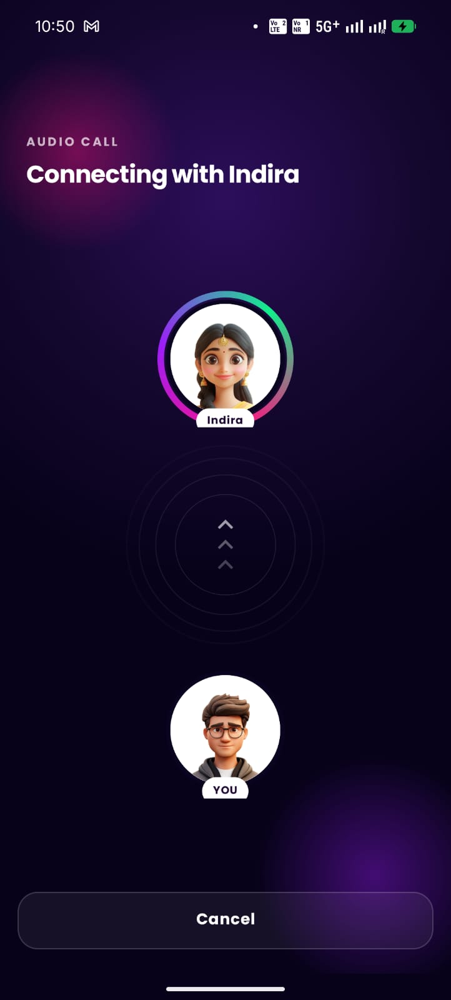
In-call — inline gift rail + dark-glass controls
Gifts moved out of a hidden bottom-sheet into an always-visible inline rail so you can send during the conversation without losing focus. Timer pill, control buttons, and rail cells all share the new dark-glass aesthetic so the UI reads as one coherent set of surfaces.
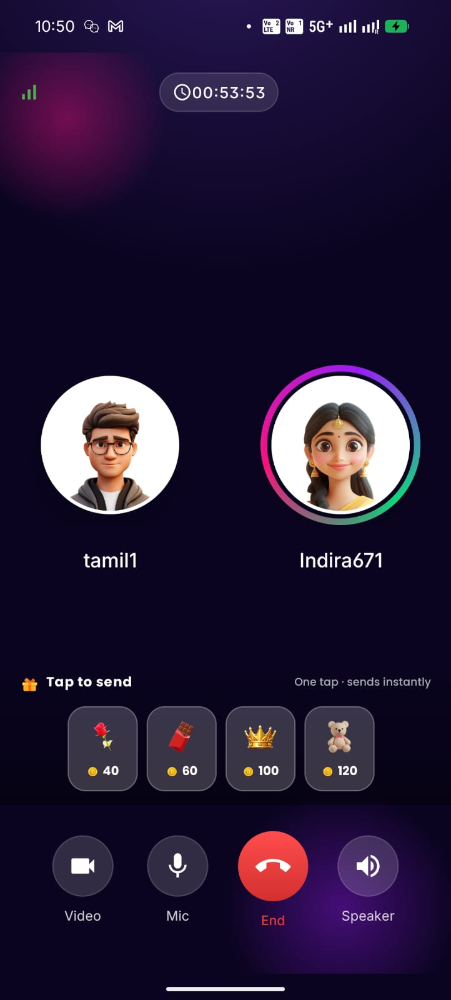
Call flow in motion
Full call flow walkthrough — connecting screen → in-call → gift send animation → end-call confirmation → rating. Watch how the gradient and conic ring carry across every transition.
Call controls — dark glass with identity strokes
Old buttons used translucent white (~18% alpha) which blended into bright video frames. Flipped to dark glass (50% black fill) with a colored stroke per button so each one keeps its identity — Video stays blue, Mic stays white, Speaker stays green. End stays a solid red gradient.
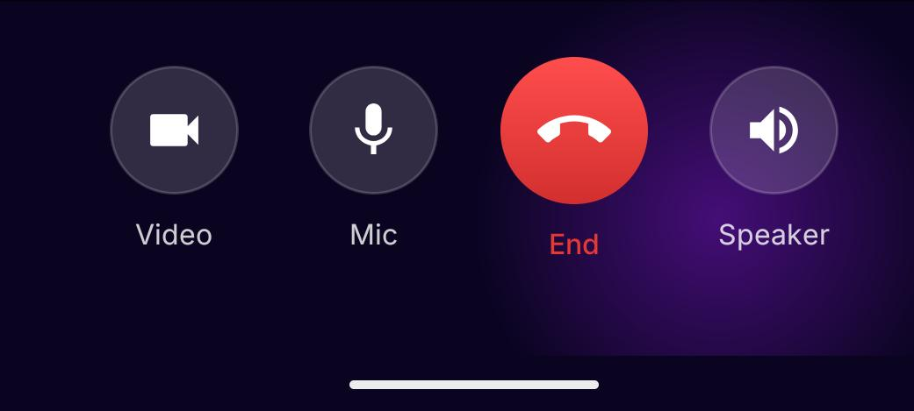
Switch to video — modern confirmation dialog
Rebuilt confirmation dialog — circular icon halo, clear title + supporting copy, and two pill-shaped buttons: outlined secondary ("NOT NOW") + solid primary ("YES, SWITCH"). Same shell is reused for end-call and other call-flow prompts.
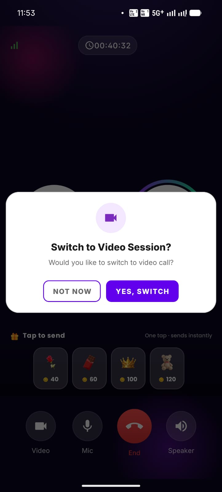
Mute indicator on the peer + on the mic button
Two signals when the other party mutes themselves — a small red mic-off chip on their avatar (so you instantly know who's quiet) and the local mic button flips to a muted glyph when you mute yourself. The chip is positioned so it doesn't overlap the avatar face (an earlier bug).
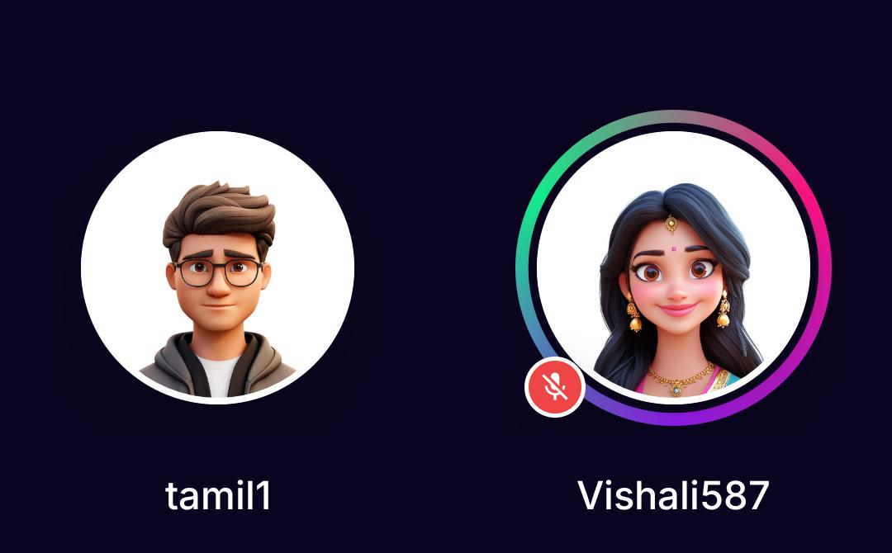

End-call confirmation
Same modern dialog shell as "Switch to video", with a heartbreak icon and a clear "END CALL" primary action. Cancel stays outlined to keep the destructive action visually dominant.
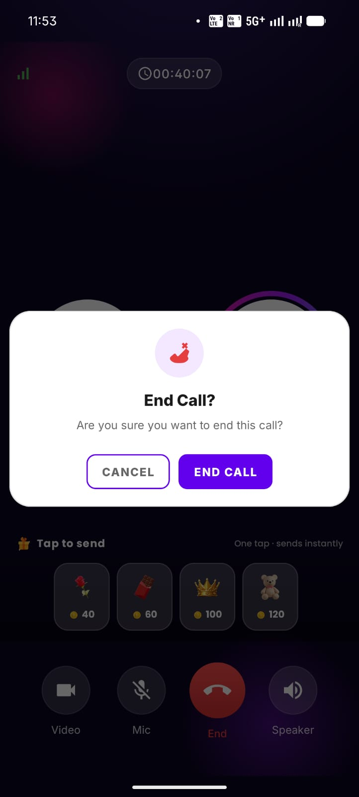
Female creator flow
Walkthrough of the female creator's perspective — incoming call full-screen, gradient accept/decline buttons, and the in-call screen with the own-avatar flipped to the left (RTL trick on users_container).
Control states + audio routing
Four states the user can land in during a call. The bottom-sheet (4th image) opens when you long-press Speaker — earpiece / loudspeaker / Bluetooth, each with a small pink-tinted icon chip.
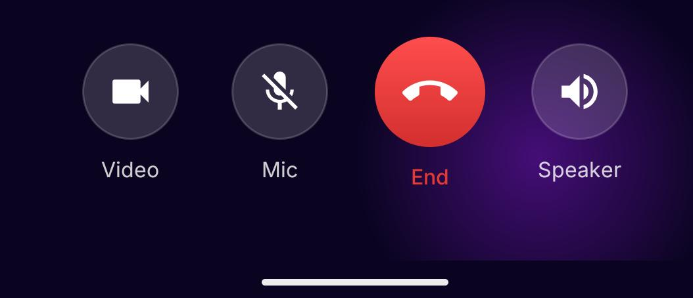
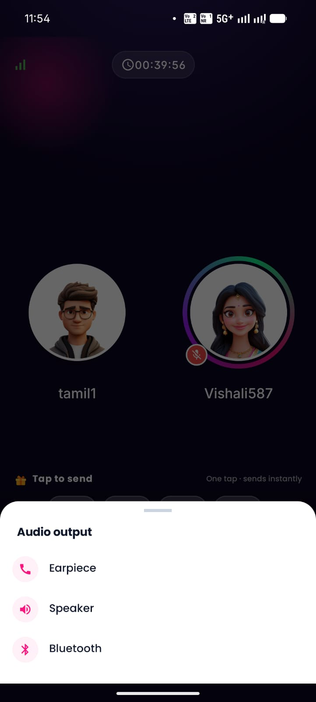
Rating — modern session feedback
Rebuilt rating screen after a call ends. Stars, a "What did you like?" chip selector, a comments card, and an "Add to Favourite" heart toggle. Edge-to-edge + adjustResize so the comment card lifts above the keyboard when the user starts typing (was broken before).
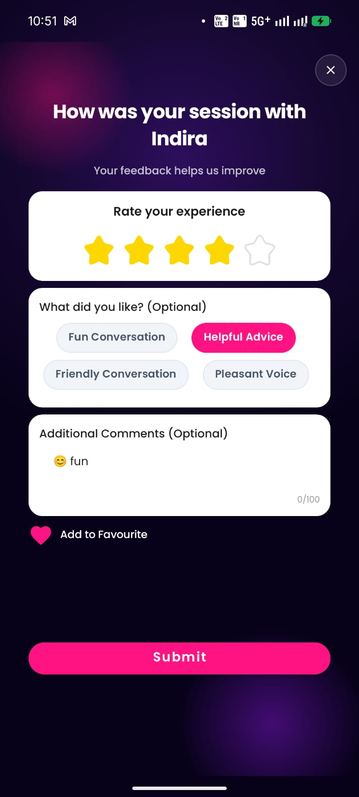
MainActivity shell in motion
Walkthrough of the new MainActivity shell — switch between Home, Recent, Favourite, Profile and the radar gradient + dark-glass nav stays consistent across every tab.
Home FAB — gradients, drag, bob + pulse
The 3 home action FABs were rebuilt as MaterialCardView pills so we could paint real multi-stop gradients (Audio purple, Video green, Random blue). They bob + pulse continuously, can be dragged anywhere on screen, and the position persists across launches.
Incoming call — receiver side
Female receiver's full-screen incoming-call. Dark radar bg + conic gradient ring around the caller. Text fix: old build said "Ringing…" on the receiver's screen, which is the caller-side phrasing. New text reads "is calling you…" — correct receiver-side language.
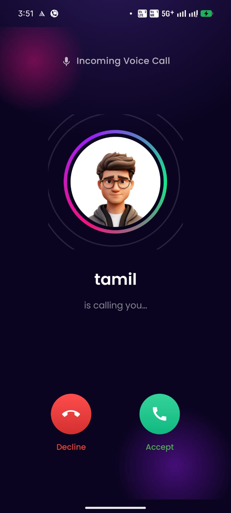
In-call — female creator's perspective
Same in-call layout from the female creator's side. Her own avatar (Vishali)
is flipped to the LEFT via android:layoutDirection="rtl" on the
users_container — mirrors the male client's "you on the left" rule so both
sides feel symmetrical.
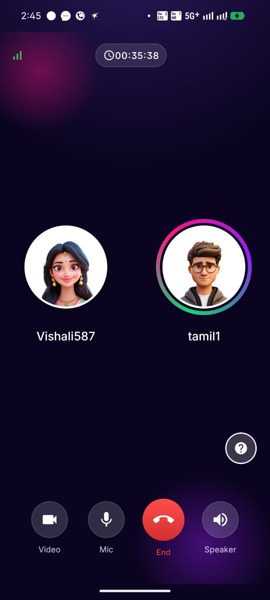
Icebreaker — prompts to break silence
New mid-call dialog with conversation prompts the user can read aloud. Falls back to a built-in question set when the API returns empty (QA unblock — was showing "no icebreaker questions" toast).
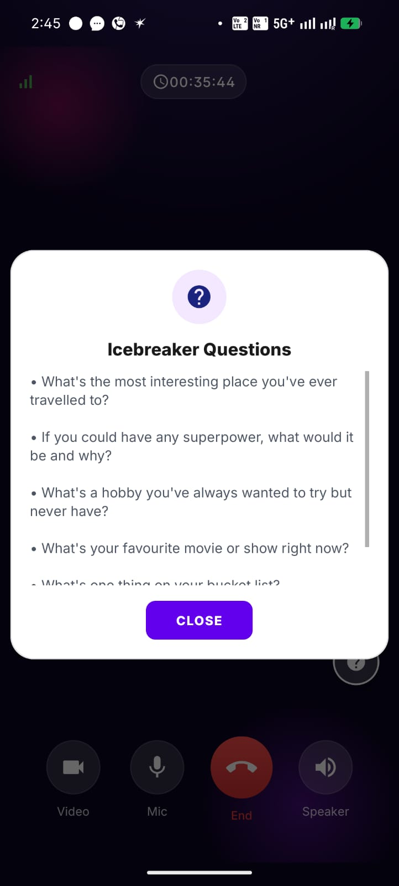
Video call — overlay UI on live video
Same surfaces (timer pill, gift rail, control buttons) but now layered over live video frames. Dark-glass treatment is critical here — at 18% white translucency (old) the controls vanished against bright walls; at 50% black glass (new) they read crisply over any frame.
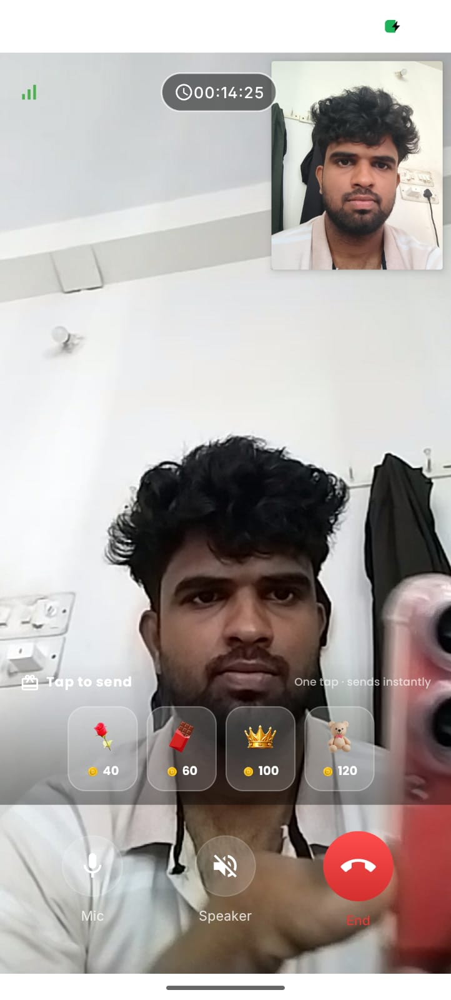
MainActivity — radar gradient across every tab
Status bar, every fragment surface, and the bottom nav now share the same radar dark gradient. Lists are translucent-white glass cards, filter pills are glass with white strokes, AppBar headers are transparent, and the inactive nav icons/labels flip from slate to 75% white.
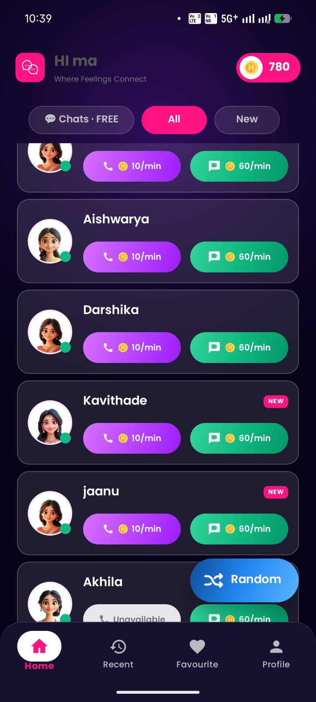
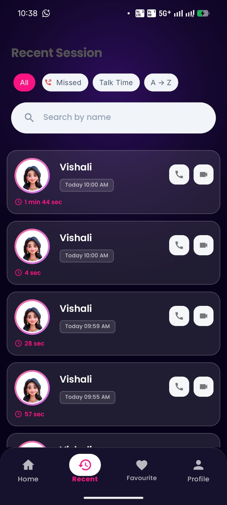
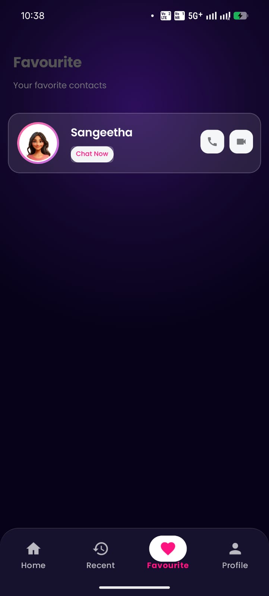
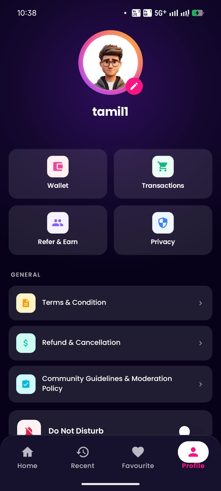